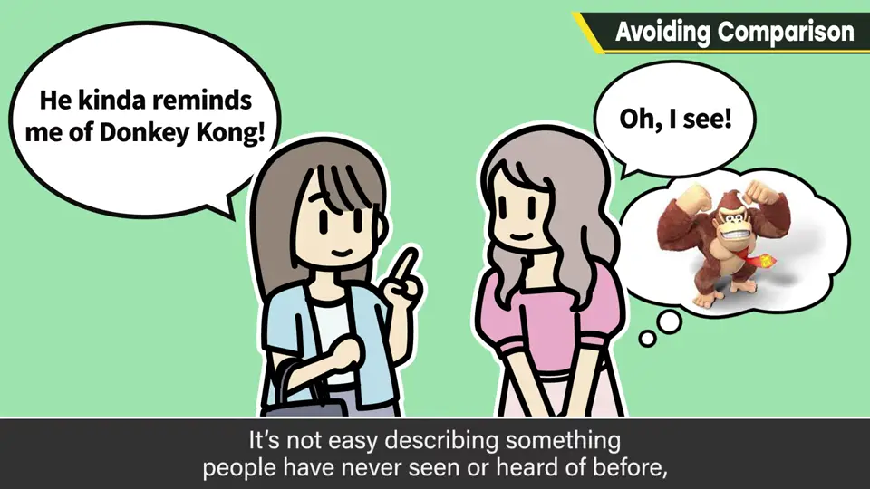
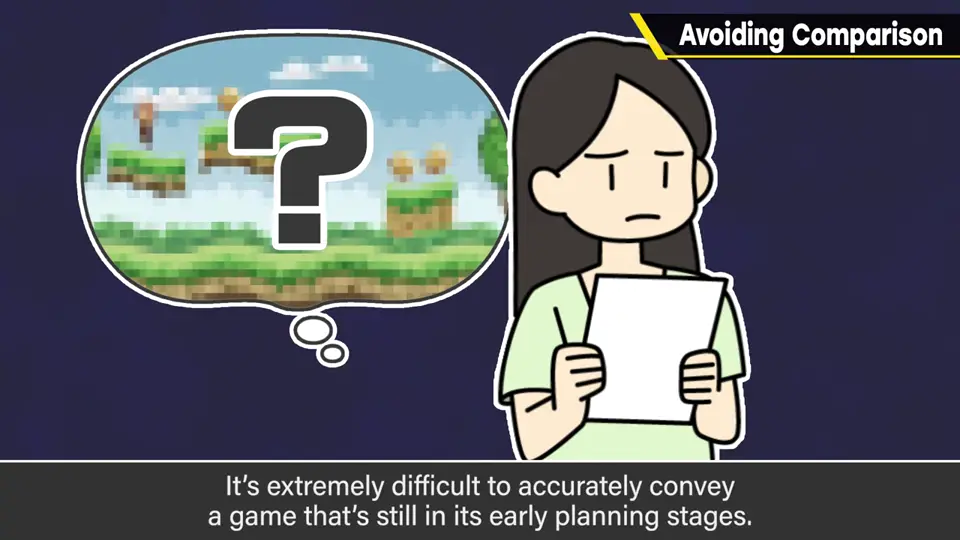
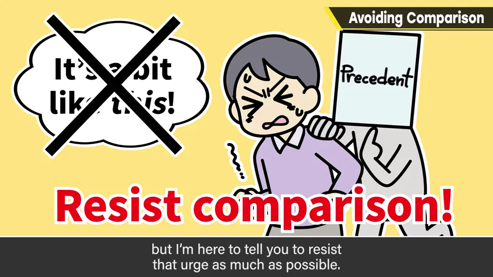
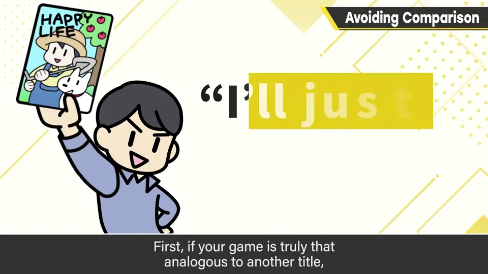
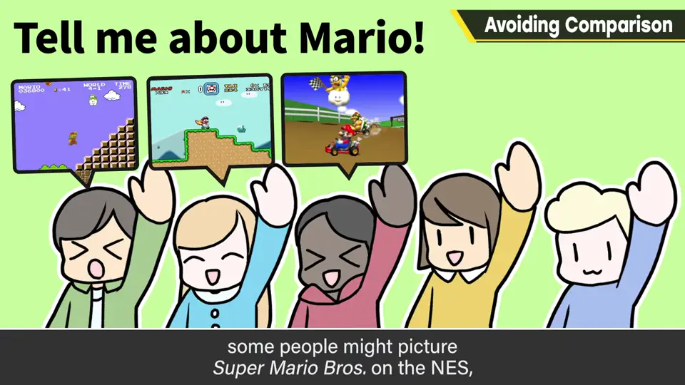
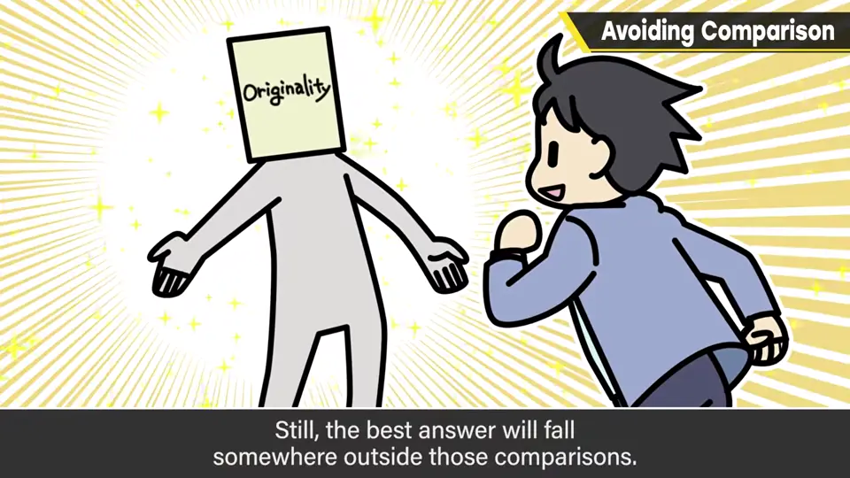

速览
不只樱井的作品，凡是新颖的游戏一发表，一定会被说成「像某某一样」——套用已有作品的形容。人不套用某种东西就难以认识：对没见过、没听过的东西很难评价，不先有个偏向某处的看法，也很难把信息带回去。发表时尚且如此，在完全没开始做的企划书阶段就准确传达新游戏，有多难！这时了解新游戏的只有企划者一人，好一点也只是一起商量的员工。接下来要到各处提案、让人理解内容：被判断没前景就拿不到经费、分不到员工、企划流产；反过来说，提案做得好，伙伴就会增加。能做的事很多，这次只讲一点：人只能用既有事物当尺度，所以容易说成「像某某」，但尽量忍住别说。听提案的人怎么理解是他们的自由，但企划方要避免说。理由有二：① 与其做得像某作品，不如去玩原作——能以与某作品相同为卖点的只有续作；公司也不想特意为类似嫌疑想对策。② 「像某某」的形容因世代和经历差别很大：一句「马里奥」，有人想到 FC《超级马里奥》，有人想到《马里奥赛车》，也可能是作为角色的马里奥；世代不同常识也不同，别太把自己的经验当尺度。「像某某」是方便信息共享的词，视对象也可以多用；但真正的答案在那把尺子之外——无论企划书还是成品，都努力让独有的优点渗透出来吧。
1. 人需要类比才能认识 0:03
不只樱井的作品，任何新颖的游戏一发表，必然会被套用既有作品形容成「像某某一样」。

人不套用某种东西就难以认识：对没见过、没听过的东西很难评价；不先形成偏向某处的看法，也很难把信息带回去。
2. 企划书阶段更难传达 0:33
发表时尚且如此，在完全还没开始做的企划书阶段就要准确传达新游戏，有多难！这个阶段了解新游戏的只有企划者一人；就算一起商量着做，顶多也只有共享信息的员工。

接下来必须到各处提案、让人理解内容。被判断「没前景」，经费就批不下来，员工也不会分配，企划就流产了。反过来说，提案做得好，伙伴就会越来越多。
3. 企划方别说「像某某」 1:08

听提案的人理解成「像某某」是他们的自由；但企划的一方要避免说。理由有两个。
4. 两个理由 1:41
① 如果和某作品类似，不如去玩原作。能以与某作品相同为卖点的，大概只有续作。作为企业，也不想特意去想应对类似嫌疑的对策。


② 「像某某」的形容因世代和经验差别很大。例如一句「马里奥」，有人想到 FC 的《超级马里奥》，有人想到《马里奥赛车》，也可能是作为角色的马里奥。世代不同，常识和所知也不同，最好别太把自己的经验当尺度。

自测题
1. 为什么企划书阶段传达新游戏特别难？
还没开始做，了解它的只有企划者（及少数商量的员工），却要说服各方给预算和人手。 0:33
2. 樱井给企划方的建议是什么？
尽量忍住，不要用「像某某一样」来说明自己的游戏。 1:08
3. 避免「像某某」的两个理由？
① 类似的话不如玩原作（只有续作适合以相同为卖点）② 「某某」的含义因世代与经历差异很大。 1:41